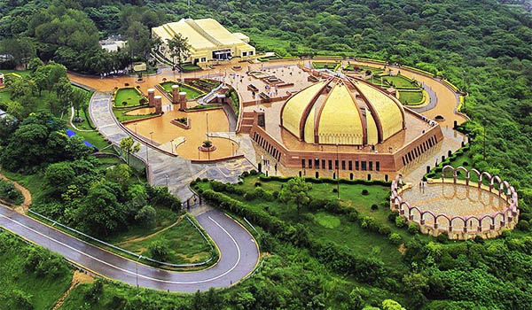
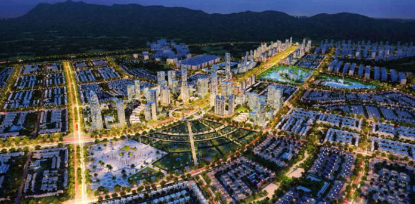

Hello! I am Atta Ullah, a passionate travel blogger who views the world through
a unique lens. Each destination I explore isn't just a place on a map, but a rich tapestry
of stories, cultures, and landscapes. Whether I'm wandering through bustling city streets
or soaking in the tranquility of nature's hideaways, I seek out the tales that lie hidden in
every corner. Through my blog, I invite you to journey alongside me, to experience the world
as I see it. Every sunset, every smile, every ancient cobblestone pathway holds a story, and
I'm here to share them with you. Welcome to my world, one adventure at a time.
Exploring Islamabad
A Gem in the Heart of Pakistan Islamabad, the capital city
of Pakistan, is not just a political hub but also a traveler's delight. Nestled
against the backdrop of the magnificent Margalla Hills, Islamabad offers a unique
blend of modernity and tradition, making it a must-visit destination for both local
and international tourists. Here are some of the positive sides to traveling to Islamabad:

Modern Infrastructure
Islamabad stands out for its well-planned infrastructure, organized roadways, and
contemporary architecture. The wide roads lined with trees, the sectors meticulously
designed for easy navigation, and the general cleanliness of the city offer a refreshing
experience.

Cultural Events & Festivals
Islamabad frequently hosts various cultural festivals, art exhibitions, and musical concerts
giving visitors a chance to immerse themselves in the local culture.